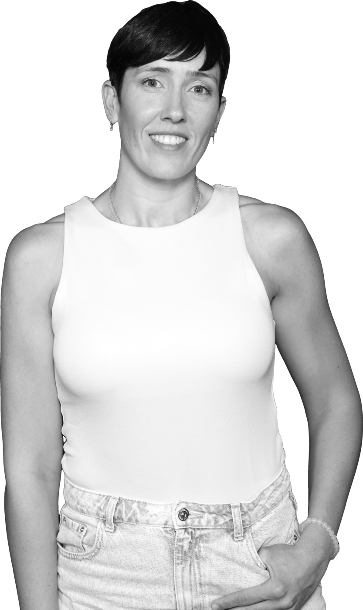

Sistema de marca 2.0
Todo lo de esta página está medido sobre el carrusel de referencia o calculado (contraste WCAG). Es la base para web, CTAs, vídeo y redes.
Todo lo de esta página está medido sobre el carrusel de referencia o calculado (contraste WCAG). Es la base para web, CTAs, vídeo y redes.
Superficies
Oscura · principal
Degradado vertical. El azul-morado vive solo en el tercio de arriba y muere antes de la mitad. Es lo que separa a MD de un fondo negro cualquiera.
#252D39 → #232426 (52 %) → #1E1E1E
Clara · alterna
Plana, sin degradado. Alterna con la oscura para dar ritmo: en carrusel slide a slide, en web sección a sección.
#E9E9E7
Acento y contraste medido
La regla que hay que recordar: el coral vivo sobre la superficie clara da 2.38 y falla, incluso a tamaño grande. Sobre claro se usa el coral profundo. Y un botón coral lleva tinta oscura: con blanco encima da 2.89.
Tipografía · Axiforma, dos pesos de trabajo
Caja mixta siempre en titulares: las mayúsculas son lenguaje Polestar. Solo los micro-rótulos van en versal con tracking.
CTAs
Sobre oscuro
Sobre claro
Un solo primario por pantalla. Sin esquinas redondeadas: el isotipo es todo aristas y el sistema lo sigue.
Componentes
Marca de episodio · sustituye a la píldora púrpura
Lower-third de vídeo
La cita · el componente que define la marca
No está fuera.
Está dentro.
El cuerpo
es tu casa.
A tamaño real la tarjeta lleva además la foto del ponente en B/N a sangre por la derecha (900 px de 1350) y el isotipo tono sobre tono detrás.
La diagonal · el único gesto gráfico

Salí del dolor crónico yo sola
Viene de las portadas de episodio que ya existen y nace de las aristas del isotipo. Reglas: una sola por pieza, siempre detrás de la figura, nunca cruzando texto, y en coral vivo solo sobre superficie oscura. Es el puente entre el sistema viejo y este.
Aplicaciones
Juan Nieto habla con quien sabe de movimiento, dolor y cuerpo. Sin atajos y sin vender nada.
Hero de web. La foto sangra por el borde inferior derecho, en B/N, con la diagonal detrás. Un solo primario.
Portada de episodio 4:5. La versión vieja ponía «Episodio 58» en una píldora púrpura: fuera, el púrpura no llega a contraste.
Miniatura de YouTube 16:9. Aquí la foto puede ir a color si la cara pierde legibilidad al tamaño de miniatura; es la única excepción al B/N.